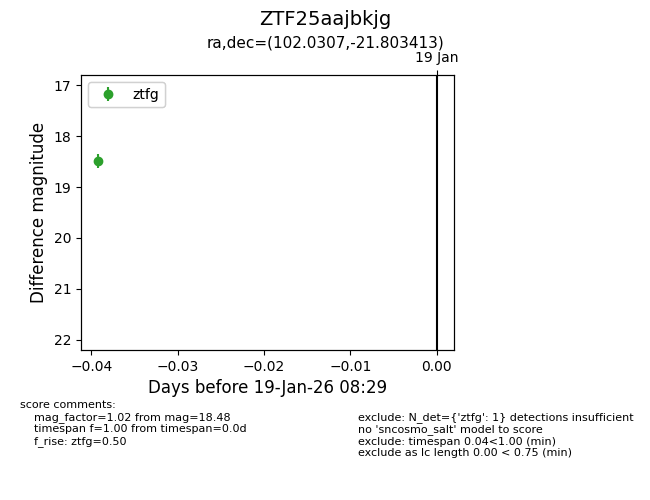
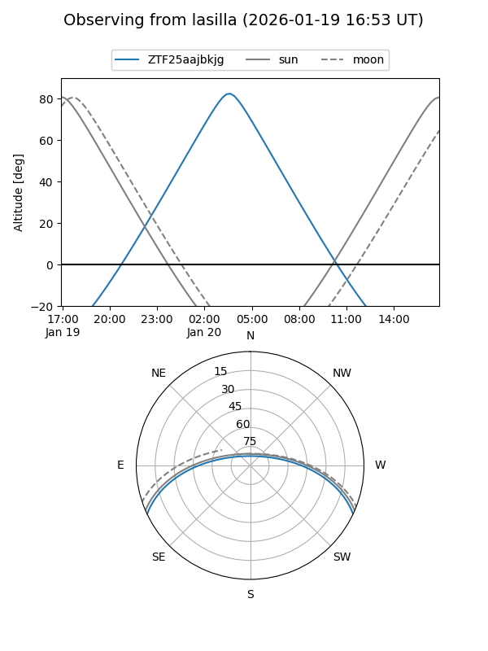
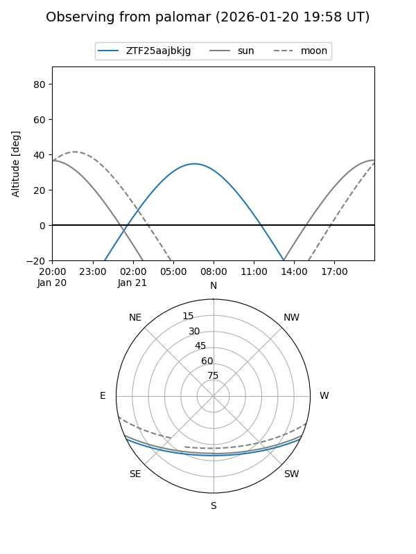

ZTF25aajbkjg
Target ZTF25aajbkjg at 2026-01-21 08:36
Aliases and brokers:
FINK: link
Lasair: link
ALeRCE: link
alt names
ZTF25aajbkjg (ztf,fink_ztf)
Coordinates:
equatorial (ra, dec) = 102.0307,-21.80341
equatorial (HMS+DMS) = 06:48:07.37,-21:48:12.29
galactic (l, b) = (232.1950,-10.44635)
Flags:
Photometry:
last ztfg=18.48
1 ztfg detections
Lightcurve

Visibility


Additional plots